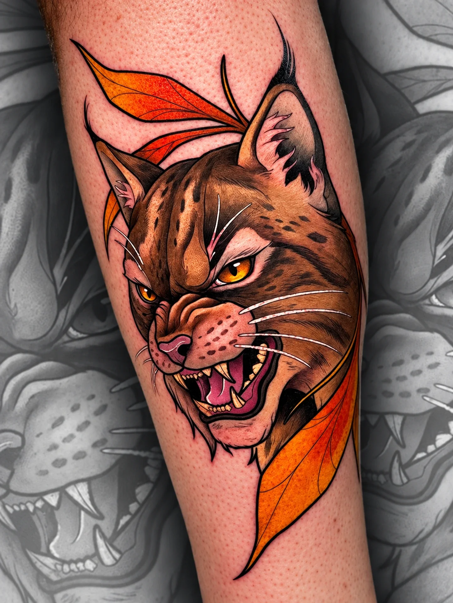
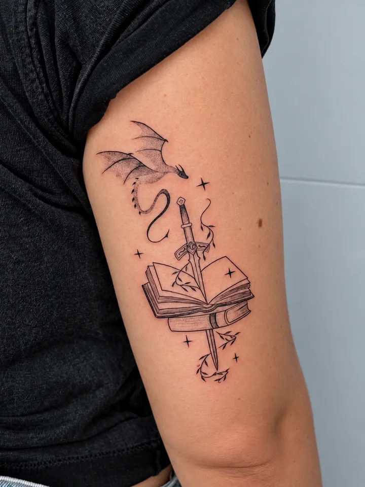
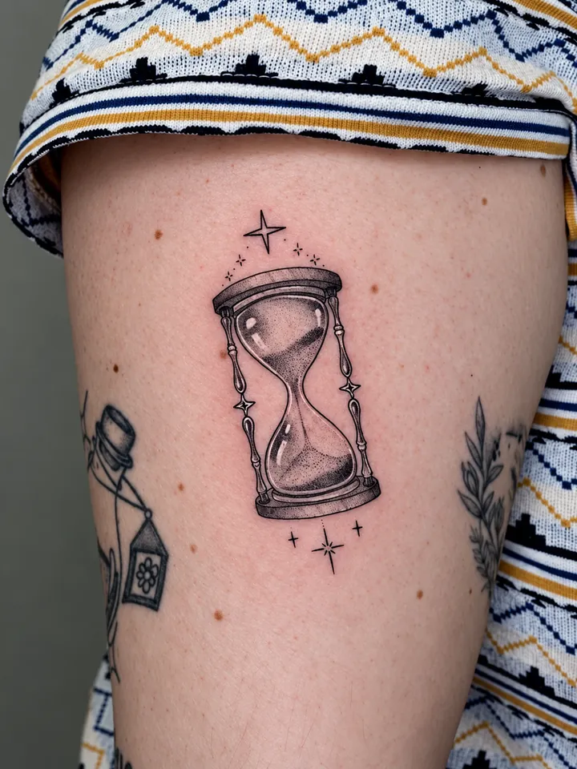
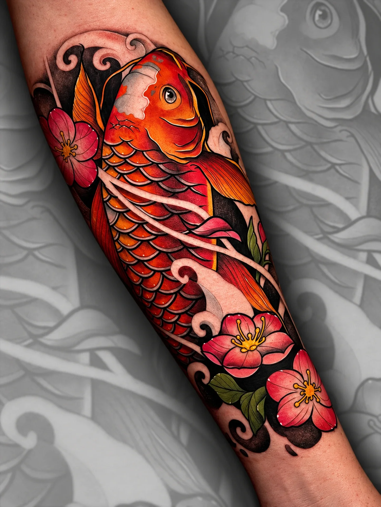
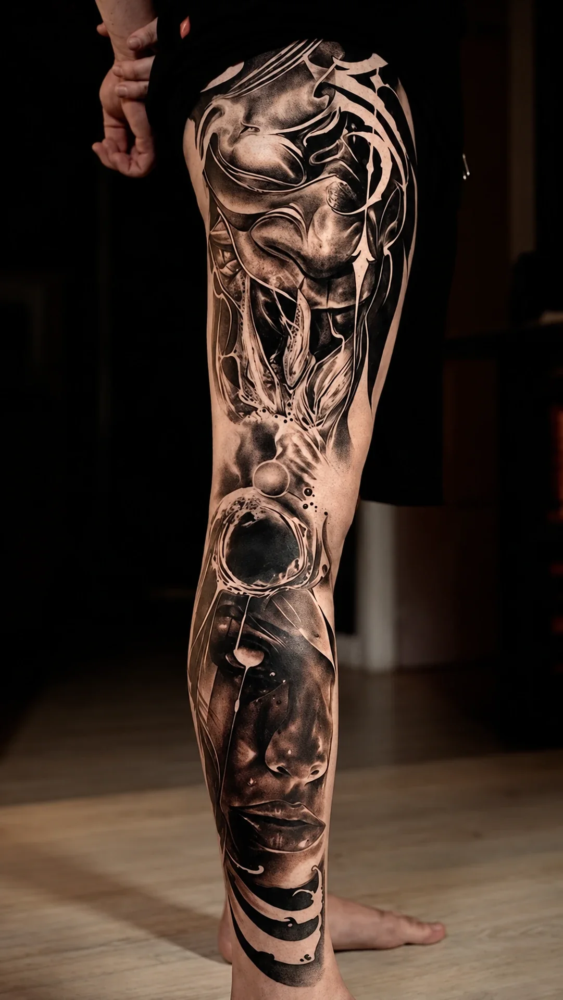
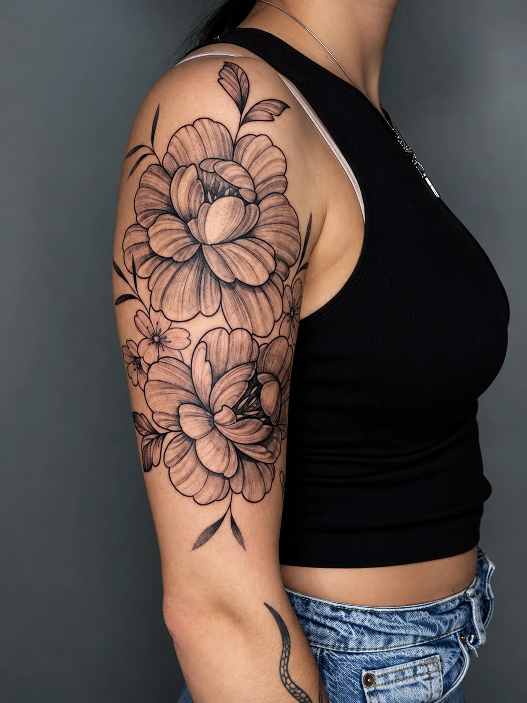

Inicio/Tatuajes
Tatuajes a medida
Neotradicional, realismo, fine line y más. Elige un estilo y conoce al artista que mejor lo defiende.
Profundiza
Todos los estilos
Una página para cada estilo, con lo que lo define, cuándo encaja, preguntas frecuentes y quién lo hace.

Neotradicional y neojaponés
Color saturado, línea firme y motivos con mucha presencia.
Ver más
Anime y personajes
Personajes de anime, cine y animación con mucho color.
Ver más
Realismo y black & grey
Retratos, volumen y piezas completas en gris y negro.
Ver más
Blackwork y dotwork
Mandalas, geometría, negro sólido y puntillismo.
Ver más
Fine line
Línea fina, flores, símbolos y piezas delicadas.
Ver más
Tatuajes pequeños
Piezas mini y discretas, con mucho cuidado en el detalle.
Ver másCover up
Reformar o tapar tatuajes antiguos con un diseño nuevo.
Ver más
Graffiti
El lado graffiti del estudio: letras, color y diseño propio.
Ver más
Estilo 01
Neotradicional, neojaponés & anime
Contornos firmes, paletas intensas y mucha personalidad. Del lince al koi, de un personaje de anime a una escena completa: piezas que destacan a la primera y envejecen bien. Luis también se encarga de cover ups, blackout y piezas pequeñas.

Estilo 02
Realismo & black grey
Retratos, piernas, espaldas y mangas con volumen, contraste y detalle fotográfico. Guille dibuja cada proyecto antes de tatuarlo y se mueve igual de bien en el gris que en el color.


Estilo 03
Fine line & dotwork
Línea fina, puntillismo y composiciones respiradas. Flores, animales, letras, coordenadas y diseños pequeños que se sienten íntimos. María ofrece un trato muy cercano, ideal para primeras veces.

Más cosas
Cover up, graffiti y colaboraciones
Cover up
¿Un tatuaje antiguo que ya no te representa? Mándanos una foto y te decimos si se puede reformar o tapar y con quién encaja mejor. Ver más.
Graffiti
Somos «Custom Tattoo & Graffiti». Guille tiene un destacado de graffiti e ilustraciones en su Instagram. Ver más.
Guest spots
Recibimos artistas invitados durante el año. Anunciamos las fechas en nuestro Instagram: síguenos para no perderte ninguna.
Antes de decidir
Preguntas sobre tatuajes
¿Cuánto cuesta un tatuaje?
¿Puedo traer mi propio diseño?
¿Hacéis tatuajes pequeños?
¿Qué pasa si quiero tapar un tatuaje?


Pide tu cita
Cuéntanos tu idea
Escríbenos por WhatsApp con tu referencia, la zona del cuerpo y el tamaño aproximado. Te respondemos dentro del horario del estudio.